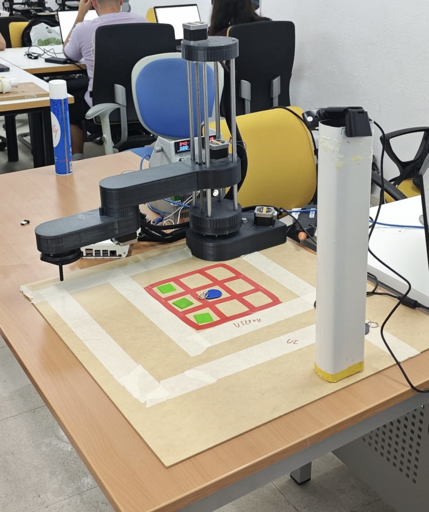
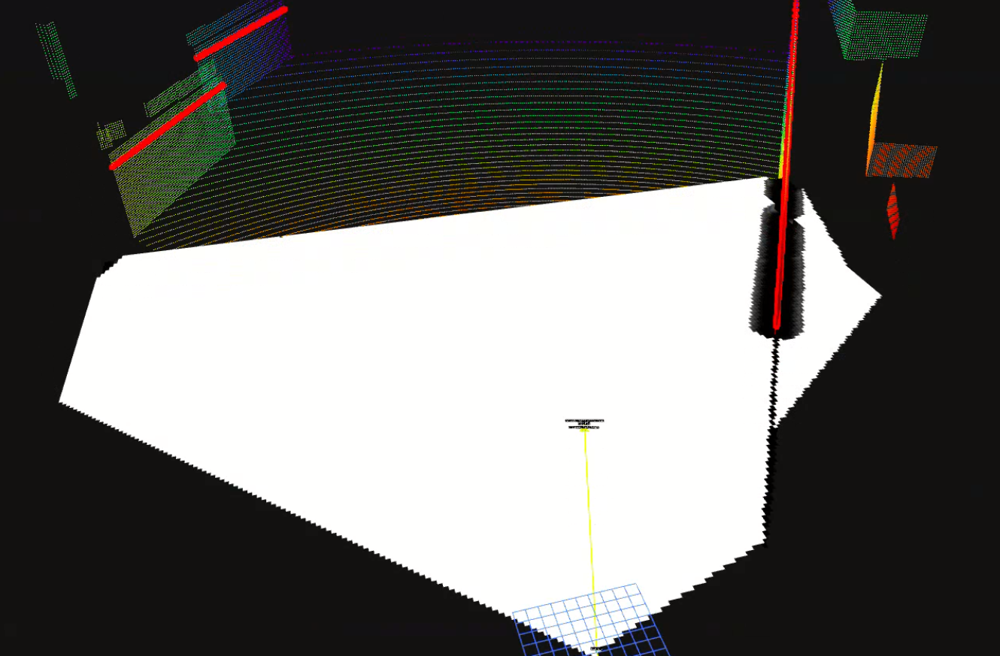
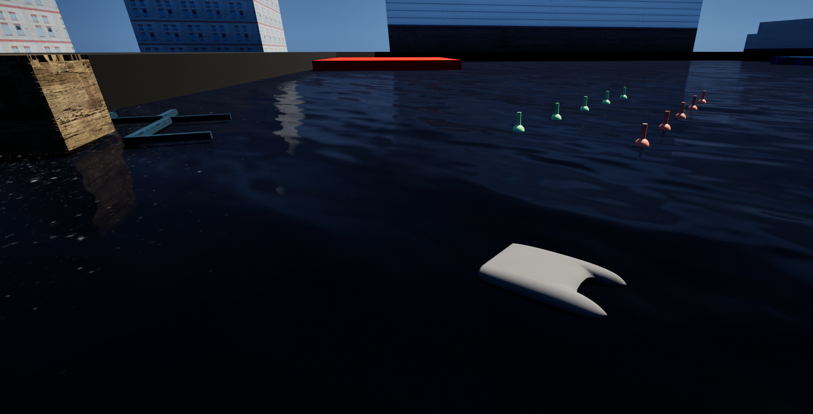

Robotech Student Association: Treasurer & Scara Project Head
Jan 2025 - Present
The Scara Project aims to combine advanced control systems with sophisticated artificial intelligent decision systems to enable our SCARA robot to play chess autonomously
Tecnico Solar Boat:Autonomous Systems Dept. Member - Mapping Responsible
Aug 2025 - Present

Responsible for mapping implementation within the autonomous navigation stack.